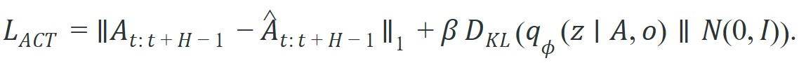
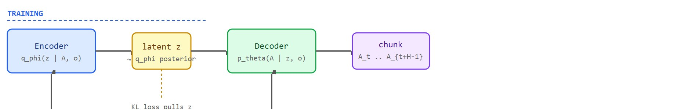

"Predicting one step leaves the future negotiable at every tick. Predicting a chunk is a commitment: the policy stakes its coherence on the next several moves at once."
Section 22.2
This section assumes familiarity with the compounding-error argument developed in section 22.1, where single-step prediction is shown to diverge on contact-rich tasks. The cVAE formulation introduced here is applied directly to the ALOHA bimanual platform in section 22.3. Readers interested in a score-based alternative to the latent-variable approach should continue to section 22.4, which addresses the same multimodal distribution problem through iterative denoising rather than a learned latent prior.
A bimanual robot learning to fold a shirt from human demonstrations hits a silent wall: every expert does it slightly differently, and a policy trained on mean-squared error averages those styles into a frozen, indecisive hover. ACT breaks the wall by encoding a latent variable that captures which strategy the demonstrator chose, then committing to a full chunk of future actions at once rather than hedging at every tick. As of 2023-2024, as dexterous manipulation benchmarks cross the threshold from lab demos to deployable hardware, the cVAE formulation inside ACT is one of the few architectures that survives contact-rich, high-frequency tasks. This section derives the training objective, traces how the KL term regularizes the style latent, and applies temporal ensembling to smooth overlapping chunks into a stable robot trajectory.
A $32,000 pair of arms slots a battery into a remote, peels open a translucent condiment cup, and folds a shirt, all at contact tolerances under a millimeter, on tasks where a plain behavior-cloning policy freezes and stalls. That capability comes from ACT, introduced by Zhao et al. (2023) alongside the ALOHA bimanual platform: two 6-DoF ViperX arms teleoperated through a leader-follower pair of WidowX arms, recording 50 Hz joint-position demonstrations from four cameras (one overhead, one front, two wrist). The architecture pairs a Transformer encoder-decoder with a conditional VAE head, where a VAE (variational autoencoder) is a generative model that learns to compress data into a probabilistic latent code and reconstruct it, and the conditional form additionally lets that code depend on observed context such as the robot's camera views, and that pairing is what turns indecisive imitation into committed, contact-rich motion.
The key question for ACT is concrete: given a chunk of demonstrated joint trajectories and four camera views, how does the policy commit to one coherent multi-step motion instead of averaging two experts' approach angles into a trajectory that grasps neither cup edge cleanly?
A representation earns its place when it changes the measurable action interface. In act (action chunking transformer) and the cvae formulation, the reader should keep asking which decision becomes easier, safer, or more reliable.
For ACT (Action Chunking Transformer) and the cVAE formulation, the practical design rule is to make the interface inspectable before optimization begins: inputs, outputs, units, latency, bounds, and failure labels should all be visible in the saved artifact.
The mechanism in ACT (Action Chunking Transformer) and the cVAE formulation is the contract between representation and action. Name what enters the module, what leaves it, which assumptions make that transformation valid, and which log would reveal a bad handoff. The "ACT Objective And Temporal Ensembling" subsection below names this contract concretely: the encoder's input and output, the KL term that regularizes the handoff, and the per-batch KL log that reveals a collapsed latent before it wastes a training run.
For ACT (Action Chunking Transformer) and the cVAE formulation, keep one concrete rollout in view. A sensor reading becomes an estimate, the estimate constrains an action, the action changes the world, and the next observation confirms or contradicts the assumption. The section's idea is useful only if it improves that loop.
from pathlib import Path
dataset_root = Path("robot_demos")
for episode in sorted(dataset_root.glob("episode_*")):
print("inspect", episode.name)
print("next step: convert demonstrations to the LeRobotDataset format")robot_demos/ directory, printing each episode_* folder name found by Path.glob, then names the LeRobotDataset conversion as the next pipeline step.Expected output: the printed trace for ACT (Action Chunking Transformer) and the cVAE formulation should expose the method configuration, the measured evidence field, and the failure label. If one of those fields is missing or unchanged under the perturbation, the example is not yet an evaluation artifact.
The from-scratch fragment should expose the assumption behind ACT with chunk length, latent sampling, temporal ensembling, and reconstruction plus rollout evidence. For serious runs, use LeRobot, robomimic, ACT, Diffusion Policy, VQ-BeT, ALOHA, GELLO, or UMI with the same manifest and evaluator.
With the data interface surfaced, the next question is why that data resists a naive fit at all, and the answer lies in how human demonstrators disagree. Human demonstrations of the same task are not identical. An expert teleoperating a bimanual arm may approach a cup from the left on one trial and from the right on another. A plain behavior-cloning policy trained with mean-squared error averages these modes, and the resulting trajectory hovers awkwardly between both approaches and succeeds at neither. The cVAE fixes this: it learns a latent variable $z$ that indexes which mode the demonstrator chose. During training, the encoder infers $z$ from the demonstrated chunk. At inference, the robot samples $z$ from the prior and commits to one coherent strategy for the entire chunk.
So far: mode-averaging fails because it blends contradictory demonstration styles into one useless trajectory; the cVAE fixes this by learning a latent $z$ that indexes which style is in play; and training and inference use $z$ differently, the encoder infers it from data during training, but the robot only samples it from the prior at inference time. The rest of this subsection names that behavior, quantifies its payoff, and formalizes the loss that produces it.
This property is called latent-indexed style commitment, and it separates ACT from a vanilla behavior-cloning transformer. A policy trained to average every expert's style does not inherit their skill; it inherits their indecision. The conditional variational formulation exists for one reason: to prevent mode-averaging from destroying the integrity of high-dexterity motions. In the original ALOHA experiments, a plain behavior-cloning policy achieved roughly 20% success on the shirt-folding task. ACT with the cVAE latent reached 60%, a three-fold gain from one extra encoder and a KL term (short for Kullback-Leibler divergence, a penalty that measures how far the learned latent distribution drifts from a fixed reference distribution). To put the data cost in perspective: reaching comparable dexterity with a mode-averaging policy typically requires thousands of demonstrations to statistically wash out the variance between styles, whereas the cVAE latent encodes that variance explicitly, so ACT achieves the same coverage with roughly 50 demonstrations per task.
Figure 22.2A above sketches the three moving parts that the rest of this section formalizes: the cVAE encoder that compresses a demonstrated chunk into the style latent $z$, the Transformer decoder that regenerates the chunk from observations and $z$, and the temporal ensemble smoother that stitches overlapping chunks into one trajectory. Action Chunking Transformer (ACT) predicts a sequence of future actions conditioned on current observations and robot state. In the common conditional variational autoencoder (cVAE) formulation, an encoder maps the demonstration action chunk into a latent variable $z$, and a decoder predicts the chunk from observation features and $z$:

The reconstruction term teaches the action sequence, while the KL term prevents the latent code from becoming an arbitrary lookup table. At inference, ACT samples or uses the latent prior, then smooths overlapping chunk predictions with temporal ensembling. The diagram below traces this split. The top row shows the training path: the encoder infers $z$ and the KL term pulls it toward the prior. The bottom row shows the inference path: ACT drops the encoder, draws $z$ from $\mathcal{N}(0,I)$, and lets the temporal ensemble blend overlapping chunks into the final robot command.

Think of the KL term as a rubber band stretched between two cookie-cutter shapes: the encoder's learned posterior $q_\phi(z \mid A,o)$ is one shape, and the standard Gaussian prior $\mathcal{N}(0,I)$ is the target template. The reconstruction loss pulls the encoder to be as expressive and specific as possible about each demonstrated style; the KL term simultaneously pulls it back toward the template, preventing any single demonstration from carving out its own private corner of the latent space. The training process reaches equilibrium when the latent is just expressive enough to distinguish styles without becoming a rigid address book. At serving time, the rubber band has done its job: sampling from the tidy Gaussian template is enough to reach any style the encoder ever learned to represent.
A common assumption is that the latent variable $z$ acts as a discrete mode selector, choosing among a fixed menu of demonstrator styles much like a cluster label or skill index. This is wrong in the embodied AI context: $z$ is a continuous random variable sampled from a learned Gaussian posterior during training, and the encoder that produces it is discarded entirely at inference time. At deployment the robot samples $z$ from the unconditional prior $\mathcal{N}(0,I)$, not from any observation of the current demonstration. The correct mental model is that $z$ seeds a smooth interpolation through the space of feasible strategies, giving the decoder the freedom to commit to one coherent trajectory rather than averaging across modes, without requiring the robot to classify which mode is active.
Start the KL weight beta at 10 and monitor the per-batch KL term during training, as a starting heuristic rather than a universal constant: if it drops below 0.5 nats (nats are units of information measured with the natural logarithm, the same role bits play when measured with log base 2) within the first few hundred steps, the encoder has typically collapsed and z is being ignored. In LeRobot's ACT configuration this corresponds to setting policy.beta=10 in the Hydra config (Hydra is a configuration-management library that lets a training run's hyperparameters, such as beta, be set and overridden from a structured config file or command line rather than hard-coded); halve beta and restart rather than continuing. In practice, a healthy run tends to keep KL between 1 and 5 nats throughout training on ALOHA-scale tasks, which suggests the latent is carrying genuine style information rather than noise, though the exact healthy range shifts with task complexity and chunk length.
Two failure modes appear regularly in ACT deployments. First, KL collapse: if $\beta$ is set too high, the encoder is penalized so strongly for deviating from the prior that $z$ carries no information, the latent is ignored, and the policy collapses to mode-averaged behavior, defeating the entire purpose of the cVAE. Second, chunk-length mismatch: a chunk horizon $H$ that is too long forces the policy to commit to a plan before it has observed feedback from the first actions in the chunk, so if contact with the object shifts the arm's actual position even slightly, every later action in that same chunk is still aimed at the pre-contact plan rather than the corrected one, causing compounding positional errors on tasks with contact uncertainty. In the ALOHA experiments, $H$ of 100 steps at 50 Hz (two seconds) worked well for pick-and-place but required tuning for tasks with tight peg tolerances. Always sweep $\beta$ and $H$ together on a small held-out split before full training.
The failure mode runs in both directions, not just toward collapse. Setting $\beta$ too low removes the regularizing pull toward the prior: the encoder is then free to memorize each demonstrated chunk as its own private latent code, the reconstruction loss drops sharply during training, but at inference the sampled prior $z$ falls outside any region the decoder learned to interpret, and the robot executes an action chunk that matches none of the training styles. In practice this shows up as a training loss that looks excellent while the held-out rollout success rate collapses, the mirror image of the KL-collapse symptom described above.
Because ACT re-queries the policy at every control tick, each tick produces a new $H$-step chunk that partially overlaps with the previous one. Without averaging, the robot executes a fresh plan from scratch every step, producing sharp velocity discontinuities that damage servo gearboxes, destabilize grasps mid-contact, and exceed the torque limits of compliant wrists on fine-manipulation hardware. Temporal ensembling matters because real actuators have inertia: a sudden action jump that is harmless in simulation causes measurable slip in a physical gripper.
The mechanism is a running buffer: every time a new chunk arrives, each of its $H$ predicted actions is deposited into a time-indexed slot alongside any earlier predictions for the same slot. When the robot must execute at time $t$, it reads all deposited predictions for slot $t$, computes their weighted average (weighting more recent chunks higher because they used fresher observations), and sends that single blended command. The buffer retires stale slots automatically. This converts $H$ possibly-inconsistent per-step plans into one smooth trajectory without re-training the policy.
Code Fragment 22.2.2 computes a tiny temporal ensemble for the same action predicted by three overlapping chunks.
# Average overlapping action predictions for the same execution time.
# Recent chunks receive higher weight because they used fresher observations.
import numpy as np
predictions = np.array([0.20, 0.26, 0.30])
weights = np.array([0.2, 0.3, 0.5])
ensembled = float(np.sum(predictions * weights))
print(f"ensembled gripper delta: {ensembled:.3f}")Trace the buffer with a chunk horizon $H = 3$ and an exponential weight $w_k = e^{-0.5 k}$ for a chunk that is $k$ ticks old (so the newest chunk gets the largest weight). Suppose each chunk predicts a single gripper-open value for execution time $t = 3$.
Tick 1: the policy runs and predicts a chunk whose slot for $t=3$ holds the value $0.20$. Buffer for slot $t=3$: [0.20].
Tick 2: a fresher chunk lands; its slot for $t=3$ holds $0.26$. Buffer now: [0.20 (age 2), 0.26 (age 1)].
Tick 3: the newest chunk predicts $0.30$ for $t=3$. Buffer: [0.20 (age 2), 0.26 (age 1), 0.30 (age 0)]. Now the robot must execute slot $t=3$.
Raw weights: $w_2 = e^{-1.0} = 0.368$, $w_1 = e^{-0.5} = 0.607$, $w_0 = e^{0} = 1.000$. Normalize by their sum $1.975$: $0.186, 0.307, 0.506$. Weighted average $= 0.20(0.186) + 0.26(0.307) + 0.30(0.506) = 0.037 + 0.080 + 0.152 = 0.269$. The robot commands $0.269$, biased toward the freshest prediction $0.30$ but smoothed so the gripper never jumps the full $0.20 \to 0.30$ step in one tick.
LeRobot recommends ACT as a lightweight starting policy for imitation learning because it trains quickly and has low computational requirements. Use the library policy when you want the architecture, batching, normalization, and dataset wiring handled, but keep your own latency and horizon audit.
Stanford's Mobile ALOHA system uses ACT with the cVAE latent and temporal ensembling as its policy backbone to perform whole-body tasks like cooking shrimp, wiping spills, and using an elevator from only about 50 teleoperated demonstrations per task. The latent-indexed style commitment is what lets the two arms commit to a single coherent grasp strategy instead of averaging contradictory demonstration angles, and the temporal ensemble keeps the 50 Hz commands smooth enough for compliant low-cost servos. The same ACT formulation now ships as a first-class policy in Hugging Face's LeRobot library, putting research-grade bimanual imitation within reach of hobbyist hardware.
Reproducing a result like Mobile ALOHA's depends less on the architecture itself than on the discipline of the surrounding setup, so the recipe below front-loads the contract work that makes any ACT comparison trustworthy.
The common mistake in ACT (Action Chunking Transformer) and the cVAE formulation is to celebrate the component score before checking the closed-loop handoff. The failure usually appears at the boundary: stale state, wrong frame, delayed action, saturated actuator, or metric that ignores the real task cost.
A robot learning engineer applying act (action chunking transformer) and the cvae formulation starts by recording the robot body, camera setup, action units, operator source, and split policy for every episode. That record makes it possible to compare ACT with a baseline without changing the task definition midstream.
A good embodied system makes act (action chunking transformer) and the cvae formulation visible twice: once in the design sketch and once in the replay artifact. The second view keeps the first one honest.
Scaling ACT with vision-language pretraining (2024-2026). Work from Google DeepMind and Stanford suggests that replacing the ACT encoder with a pretrained vision-language backbone can substantially reduce the number of demonstrations needed for contact-rich tasks, though the reported gains vary by task family and have not yet been replicated across a common benchmark. OpenVLA (Kim et al., 2024) and pi0 (Black et al., 2024, Physical Intelligence) both use a frozen or lightly fine-tuned vision-language model as the observation encoder, then predict action chunks using a lightweight head. The open question is how to reconcile the 7-token-per-image discretization used in language models with the sub-millimeter precision demanded by peg-in-hole and cloth manipulation.
Hierarchical and adaptive chunk lengths (2024-2025). The original ACT uses a fixed horizon H for every task phase, but Hejna et al. (2024, Stanford) and the ACTRA line of work argue that contact-rich transitions (grasp onset, peg entry) need short, reactive chunks while free-space motions benefit from long, smooth ones. Active research asks how to learn the chunk boundary detector jointly with the action predictor, without requiring manual segmentation of demonstrations.
Online fine-tuning and self-correction of cVAE policies (2025-2026). Deploying ACT in the real world exposes distribution shift: the robot encounters states outside the training reset distribution and the cVAE latent produces implausible actions. Groups at Berkeley (RLPD, Cal-QL) and CMU are combining offline ACT pretraining with lightweight online RL fine-tuning, using sparse task-success signals from the robot's own rollouts to correct the worst failure modes without re-collecting teleoperation data.
Open problem: principled temporal ensembling weights. The temporal ensembling buffer in ACT averages overlapping chunk predictions with a fixed exponential weight, which was hand-tuned for 50 Hz ALOHA hardware. No published work has derived a principled weighting scheme that accounts for observation staleness, actuator latency, and contact-event timing simultaneously. Deriving and validating such a scheme on a publicly available bimanual platform (ALOHA 2, Koch v1.1) would fill a gap that every group deploying chunk-based policies currently works around heuristically.
Can you name the observation, state estimate, action, success metric, and most likely failure mode for act (action chunking transformer) and the cvae formulation? If not, the system boundary is still too vague.
ACT earns its keep only under a closed-loop contract that names the observation stream, the state estimate, the action representation, the timing budget, and the evaluation artifact. Skip that contract and a policy can look capable in a notebook, then fail the first time a sensor drops a frame or a controller saturates.
For ACT (Action Chunking Transformer) and the cVAE formulation, separate the conceptual claim, the systems claim, and the evidence claim. A plausible mechanism, a clean interface, and a closed-loop result are different claims; the section should keep their evidence separate.
A working ACT policy rests on three separable claims: the cVAE mechanism, the closed-loop interface, and the measured rollout evidence. Never let one stand in for another.
Before scanning the tool table below, ask yourself: which single configuration choice is most likely to cause a gap between your simulation results and real-robot performance? Hold that answer in mind as you read, then check whether the table's builder advice addresses it.
| Tool or Library | Role in ACT Deployments | Builder Advice |
|---|---|---|
| LeRobot | Ships ACT as a first-class policy with Hydra config for policy.beta, chunk length, and temporal ensembling; natively handles ALOHA-style LEROBOT_DATASET episode format at 50 Hz. | Use as the training backbone for ALOHA, Koch, and SO-100 arms. Set policy.chunk_size=100 for pick-and-place, sweep down to 50 for tasks with tight peg tolerances and high contact uncertainty. |
| MuJoCo | Provides the physics simulator for ACT's original evaluation tasks (shirt folding, cup pick-and-place) at the contact timescales where single-step policies fail; supports 500 Hz internal stepping with 50 Hz policy queries. | Profile contact forces during chunk execution: as a rough diagnostic, if the simulated wrist force exceeds 20 N mid-chunk, the chunk horizon is likely too long for the task's contact geometry (the exact force threshold depends on the arm's payload and gripper, so treat 20 N as a starting point to calibrate against a known-good chunk length rather than a fixed rule). Use mj_contact data to set a physics-informed upper bound on H before tuning beta. |
| ROS 2 | Bridges ACT policy inference (typically running on a GPU workstation) to real ALOHA or Franka Panda hardware via the joint_trajectory_controller; enforces the 20 Hz or 50 Hz control loop that chunk predictions must respect. | Log the round-trip latency from observation capture to first action command. Latency above 20 ms on a 50 Hz loop means the chunk's first action arrives stale; either reduce image resolution or move inference to an on-robot GPU (e.g., Jetson Orin). |
| robomimic | Provides standardized manipulation benchmarks (Can, Lift, Square, Transport) with fixed train/validation splits; used to compare ACT's cVAE latent against BC-RNN and IQL baselines (BC-RNN is a recurrent behavior-cloning policy without a latent variable; IQL, implicit Q-learning, is an offline reinforcement-learning baseline trained from the same demonstrations) on the same Franka Panda task suite. | Run robomimic's train.py with the ACT config only after establishing a BC-RNN baseline on the same split. The Transport task (two-arm handoff) is the clearest signal: BC-RNN averages handoff styles and stalls; ACT with a properly tuned latent commits to one handoff trajectory per chunk. |
| ALOHA / ACT repo | Reference implementation of the cVAE encoder-decoder and temporal ensembling for the original ALOHA bimanual platform; demonstrates the 60% shirt-folding success rate that established the cVAE latent as necessary for high-dexterity tasks. | Use the reference repo to reproduce the baseline numbers before modifying the architecture. Pay attention to the wrist-camera normalization: raw pixel values from the ALOHA wrist cameras are darker than front cameras, and skipping per-camera normalization drops success by roughly 15 percentage points on fine manipulation tasks. |
For ACT (Action Chunking Transformer) and the cVAE formulation, start with a small baseline that logs inputs, outputs, units, timestamps, and termination conditions before moving to Gymnasium or PettingZoo. The library run should keep the same artifact schema, so the comparison remains a same-task evaluation.
When ACT (Action Chunking Transformer) and the cVAE formulation fails, avoid labeling the whole method as weak. First assign the failure to perception, state estimation, planning, control, timing, data coverage, or evaluation. Then rerun one controlled perturbation that isolates the suspected cause. This pattern turns a disappointing rollout into a reusable diagnostic asset.
ACT (Action Chunking Transformer) and the cVAE formulation should be evaluated through four lenses: the learning objective, the robot interface, the data artifact, and the deployment failure mode. Action generators differ mainly in how they represent time, uncertainty, and multimodality across the next chunk of motion.
For ACT exposes chunk length, latent sampling, temporal ensembling, and reconstruction versus rollout tradeoffs, define observations, action representation, dataset source, rollout evaluator, and failure labels before training. Then compare baseline and library implementation on the same configuration.
For ACT exposes chunk length, latent sampling, temporal ensembling, and reconstruction versus rollout tradeoffs, each demonstration binds operator behavior, robot body, sensor calibration, action representation, and reset distribution. Changing one field creates a new evaluation contract.
| Agent Lens | Question To Answer | Concrete Evidence |
|---|---|---|
| Curriculum and depth | What concept is new here, and why does Part V need it? | A definition, a worked example, and a failure case tied to the perception-action loop. |
| Code and tools | Which maintained tool removes boilerplate after the from-scratch baseline? | ACT, Diffusion Policy, flow matching, VQ-BeT, ALOHA evaluated against the same task contract. |
| Data and evaluation | What distribution produced the behavior, and where can it break? | Train, validation, and stress splits with explicit robot, camera, timing, and license metadata. |
| Publication quality | Can the reader reproduce the claim without hidden context? | Captions, bibliography cards, cross-links, and a same-artifact audit trail. |
Do not claim that act (action chunking transformer) and the cvae formulation improves robot learning unless the baseline and the proposed method share the same robot, task split, reset distribution, success metric, and random seed policy. Otherwise the comparison may be measuring dataset difficulty rather than method quality.
For ACT exposes chunk length, latent sampling, temporal ensembling, and reconstruction versus rollout tradeoffs, judge the method by closed-loop recovery, latency, stability, contact behavior, and failure labels under the same robot, reset distribution, cameras, and evaluator.
Who: A robot learning engineer evaluating ACT with chunk length, latent sampling, temporal ensembling, and reconstruction plus rollout evidence on the same manipulation benchmark, robot, camera setup, and reset protocol.
Situation: The engineer needs to decide whether act (action chunking transformer) and the cvae formulation is ready for a weekly policy comparison across 120 demonstrations and 30 held-out rollouts.
Decision: They keep the smallest runnable baseline for ACT with chunk length, latent sampling, temporal ensembling, and reconstruction plus rollout evidence, then compare the maintained implementation under the same manifest, seed, split, and rollout evaluator.
Result: The team gets one artifact for ACT with chunk length, latent sampling, temporal ensembling, and reconstruction plus rollout evidence with task success, intervention labels, timing violations, recovery behavior, and failure categories.
Lesson: ACT with chunk length, latent sampling, temporal ensembling, and reconstruction plus rollout evidence earns trust only when the data contract, action representation, and rollout evaluator are versioned together.
Before leaving this section, write one sentence that links act (action chunking transformer) and the cvae formulation to each of these connected chapters: Chapter 21: Imitation Learning, Chapter 23: Teleoperation and Data Collection, Chapter 35: Robot Foundation Models and Cross-Embodiment Learning. If any link feels forced, the section needs a sharper boundary or a clearer prerequisite recap.
Build a small audit artifact that connects act (action chunking transformer) and the cvae formulation to observations, actions, dataset provenance, evaluation splits, and failure labels.
pip install pandas pydanticCreate a schema with robot, sensor, action, demonstrator, split, and license fields. The goal is to make hidden data assumptions visible before training.
# Define the fields every demonstration episode must expose.
# Include timing and failure-label fields before evaluation.
from pydantic import BaseModel
class EpisodeCard(BaseModel):
robot: str
observation: str
action: str
demonstrator: str
split: str
license: str
control_hz: int = 20
failure_label: str = "none"
def as_row(self) -> dict[str, object]:
return self.model_dump()
episode_card = EpisodeCard(
robot="mobile_manipulator",
observation="front_rgbd plus proprioception",
action="delta_end_effector_pose",
demonstrator="teleop",
split="train",
license="CC-BY-4.0",
control_hz=20,
failure_label="none"
)
print(episode_card.as_row())EpisodeCard Pydantic model with robot, observation, action, demonstrator, split, license, control_hz, and failure_label fields, then instantiates and prints one mobile-manipulator episode.Write one clean demonstration and one stress episode. Keep the same schema so the difference is visible in values, not in ad hoc notes.
# Create one normal episode and one stress episode for comparison.
# The example includes the stress condition explicitly so the audit can run end to end.
episodes = [
EpisodeCard(
robot="dual-arm",
observation="front and wrist cameras",
action="joint deltas",
demonstrator="teleop",
split="train",
license="CC-BY-4.0",
control_hz=20,
failure_label="none",
),
EpisodeCard(
robot="dual-arm",
observation="front and wrist cameras",
action="joint deltas",
demonstrator="teleop",
split="stress",
license="CC-BY-4.0",
control_hz=10,
failure_label="chunk_boundary_overshoot",
),
]
if isinstance(episodes, list):
print({"rows": len(episodes), "first": episodes[0] if episodes else None})
elif isinstance(episodes, dict):
print({"fields": sorted(episodes), "audit_ready": all(value not in (None, "") for value in episodes.values())})
else:
print({"value": episodes})EpisodeCard instances, a clean 20 Hz training episode and a 10 Hz stress episode labeled chunk_boundary_overshoot, and prints the episode count and first entry.Convert the cards to a table and save one CSV artifact. This mirrors the book's rule that compared numbers must come from one configuration and one saved artifact.
# Save one audit table for the baseline and library route.
# Add metric columns after the rollout script runs so the artifact is evaluable.
import pandas as pd
rows = [episode.model_dump() for episode in episodes]
pd.DataFrame(rows).to_csv("part_v_episode_audit.csv", index=False)
print("saved", len(rows), "episodes")model_dump() and writes them to part_v_episode_audit.csv via pandas.Swap in the maintained tool named in this section while keeping the same manifest fields. For the full explanation of why the shortcut must not alter the evaluation question, see section 21.2.
# Validate the maintained-tool route without changing the audit schema.
library_route = {"tool": "ACT", "artifact": "part_v_episode_audit.csv"}
required_fields = {"tool", "artifact"}
missing = sorted(required_fields - set(library_route))
assert not missing
print({"loader_ready": True, "tool": library_route["tool"], "artifact": library_route["artifact"]})library_route dict has the required tool and artifact keys, then prints the resolved tool name and artifact path for the maintained-library swap-in.The lab should produce part_v_episode_audit.csv with one row per episode and enough metadata to compare a baseline with a library implementation under the same configuration.
Complete Solution
# Complete solution for the Part V audit lab.
from pydantic import BaseModel
import pandas as pd
class EpisodeCard(BaseModel):
robot: str
observation: str
action: str
demonstrator: str
split: str
license: str
timing_hz: int
failure_label: str
def as_row(self) -> dict[str, object]:
return self.model_dump()
episodes = [
EpisodeCard(
robot="dual-arm",
observation="front and wrist cameras",
action="joint deltas",
demonstrator="teleop",
split="train",
license="CC-BY-4.0",
timing_hz=30,
failure_label="none",
),
EpisodeCard(
robot="dual-arm",
observation="front and wrist cameras",
action="joint deltas",
demonstrator="teleop",
split="stress",
license="CC-BY-4.0",
timing_hz=30,
failure_label="object-slip",
),
]
rows = [episode.as_row() for episode in episodes]
pd.DataFrame(rows).to_csv("part_v_episode_audit.csv", index=False)
print("saved", len(rows), "episodes to part_v_episode_audit.csv")EpisodeCard entries with timing_hz and failure_label fields filled in (none and object-slip) and writes both to part_v_episode_audit.csv.ACT (Action Chunking Transformer) and the cVAE formulation is useful when it makes the perception-action loop more reliable, not when it merely adds a more impressive model name.
Design a method-matched experiment for ACT (Action Chunking Transformer) and the cVAE formulation. Specify the environment, observation schema, action interface, metric, and one perturbation that targets the section's core assumption.
Beginner (weekend): Temporal ensembling visualizer in MuJoCo. Implement the ACT temporal ensembling buffer for a simulated two-joint arm in MuJoCo's dm_control suite and plot how blending overlapping chunks reduces gripper velocity spikes. The key challenge is correctly indexing predictions by their intended execution time so the buffer retires stale slots without dropping live ones.
Intermediate (1-2 weeks): ACT on a pick-and-place task with LeRobot. Collect 50 teleoperated demonstrations in a PyBullet or MuJoCo pick-and-place environment, train an ACT policy using the LeRobot library, and sweep chunk length H and KL weight beta to measure the joint effect on success rate and wrist force. The key challenge is setting up a reproducible evaluation harness that keeps robot, camera, reset distribution, and success metric identical across all sweep configurations.
Intermediate (1-2 weeks): Bimanual handoff with mode-averaged versus cVAE baselines in robomimic. Use robomimic's Transport task (two-arm handoff) to compare a standard behavior-cloning policy against ACT with the cVAE latent, plotting per-episode success curves and failure-label distributions. The key challenge is confirming that the two policies are evaluated under exactly the same Franka Panda configuration, split, and seed so any gap is attributable to the architecture and not to data or environment differences.
This section grounded act (action chunking transformer) and the cvae formulation in an explicit robot-data contract: observations, actions, demonstrations, evaluation splits, and failure labels. The next reading step is Section 22.3, where the same contract is carried into the next technique or chapter.
Zhao, T. Z. et al. (2023). Learning Fine-Grained Bimanual Manipulation with Low-Cost Hardware. RSS.
This paper introduces ALOHA and Action Chunking with Transformers for bimanual manipulation. It is central for understanding why predicting chunks can stabilize high-frequency robot control.
Diffusion Policy frames action generation as conditional denoising over robot action trajectories. Read it for multimodal action distributions, receding horizon control, and the implementation details behind modern diffusion robot policies.
Lipman, Y. et al. (2022). Flow Matching for Generative Modeling.
Flow matching gives the generative-model background behind many faster action samplers. It is useful when comparing diffusion-style iterative denoising with direct vector-field training.
The project page summarizes the hardware, data collection setup, and ACT policy used for fine-grained bimanual tasks. Builders should use it to connect the paper's algorithm to an actual low-cost robot platform.
real-stanford/diffusion_policy: Official Diffusion Policy Code.
The official code provides training and evaluation examples for state-based and vision-based tasks. It is the shortest route from the section's theory to a runnable policy-learning experiment.